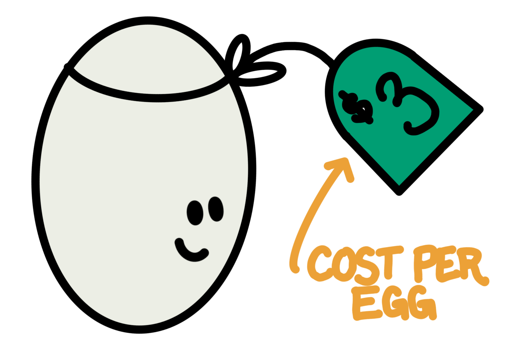
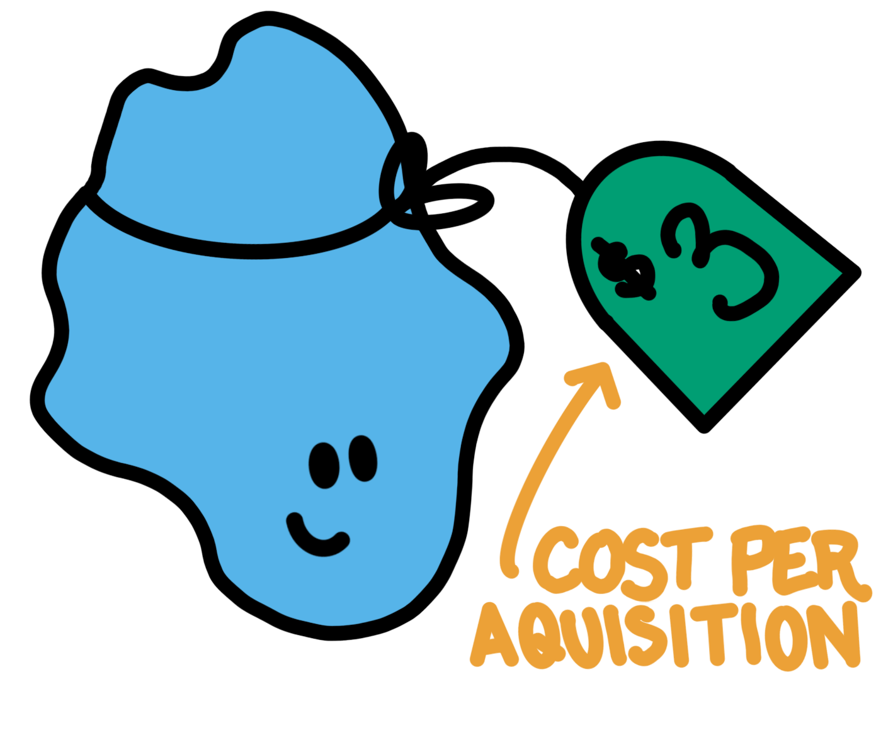
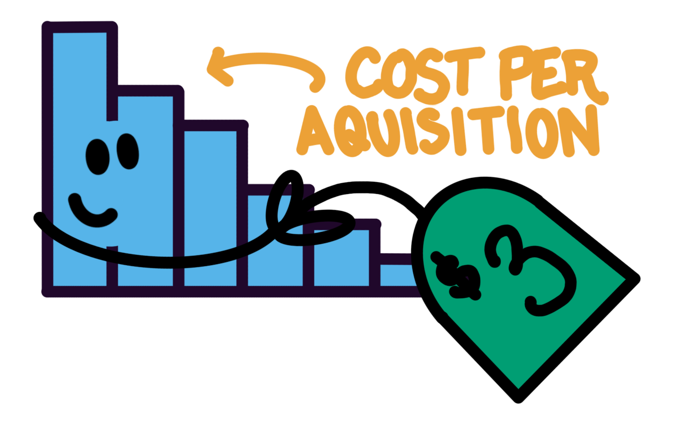

In marketing analytics there are two numbers that matter:
ROI (Return on Investment)
CPA (Cost per Acquisition)
ROI is intuitive to think about: it’s a revenue multiplier on spend (e.g. you’ll spend x you’ll get 1.2x back), CPA is not. The way we talk about CPA in marketing is as a cost: a price-tag on a conversion. If we pay the cost, we’ll get a conversion, just like if we pay $3 we can get an egg at Trader Joe’s.

an egg with a price tag

an acquisition with a price tag
But CPA is really a rate. How many exposures do we need to pay for before we get a conversion? Let’s simplify: an exposure costs $0.10. A CPA of $3 means that on average it took 30 exposures before we got a conversion.

Say we spent $1,000 per day for 30 days and saw 0 conversions. When we think about CPA as a cost we might see the $1,000 in spend per day and 0 conversions and conclude that our CPA is probably higher than $1,000. It’s like the world’s worst store, we walked up to the till each day, paid $1,000, hoped that was more than the price-tag on a conversion, and left disappointed. But, when we think about CPA as a rate we see $1,000 worth off exposures every day over 30 days with 0 conversions, a much bleaker picture.
Framed as a rate, what we saw was 300,000 exposures ($30,000) with 0 conversions. The cost per conversion is likely more than $30,000 (not $1,000). If the CPA was $1,000 we should see a conversion every 10,000 exposures (see Figure 1, there’s ~90% chance we’ll get 24+ conversions at a $1,000 CPA. Whereas at a $30,000 CPA, we often see 0 or only a few conversions) or so, but across 300,000 exposures we actually saw 0.
Figure 2: Expected conversions for $150 of spend with a true CPA of $100
Marketing spend is more complicated than this. We don’t always pay a flat rate for exposures and exposures are not the same quality as we scale spend, but the framing stands. We should encourage people to talk about CPAs as rates, not as costs because it makes interpreting CPAs more intuitive. It also highlights the mechanisms for improving CPA:
improve the rate of conversions (e.g. better targeting, quality creative)
reduce the cost of an exposure (idk, bully Meta a little?)
AI disclosure
🤖 Used AI for: AI used for blog template and plotting code.
🧍🏻♀️Did not use AI for: ideas and written blog content.
Source Code
---title: "CPAs are rates not costs"description: "My thoughts on Cost per Acquisition."date: 2026-06-13categories: [marketing, measurement]---In marketing analytics there are two numbers that matter:- **ROI** (Return on Investment)- **CPA** (Cost per Acquisition)ROI is intuitive to think about: it's a revenue multiplier on spend (e.g. you'll spend `x` you'll get 1.2`x` back), CPA is not. The way we talk about CPA in marketing is as a cost: a price-tag on a conversion. If we pay the cost, we'll get a conversion, just like if we pay \$3 we can get an egg at Trader Joe's.:::: {style="width: 60%; margin: 0 auto;"}::: {layout="[30,30]"}{width="423"}{width="394"}:::::::But CPA is really a *rate*. How many exposures do we need to pay for before we get a conversion? Let's simplify: an exposure costs \$0.10. A CPA of \$3 means that on average it took 30 exposures before we got a conversion.{fig-align="center" width="328"}Say we spent \$1,000 per day for 30 days and saw 0 conversions. When we think about CPA as a **cost** we might see the \$1,000 in spend per day and 0 conversions and conclude that our CPA is probably higher than \$1,000. It's like the world's worst store, we walked up to the till each day, paid \$1,000, hoped that was more than the price-tag on a conversion, and left disappointed. But, when we think about CPA as a **rate** we see \$1,000 worth off exposures *every day* over 30 days with 0 conversions, a *much* bleaker picture.Framed as a rate, what we saw was 300,000 exposures (\$30,000) with 0 conversions. The cost per conversion is likely more than *\$30,000* (not \$1,000). If the CPA was \$1,000 we should see a conversion every 10,000 exposures (see Figure 1, there's \~90% chance we'll get 24+ conversions at a \$1,000 CPA. Whereas at a *\$30,000* CPA, we often see 0 or only a few conversions) or so, but across 300,000 exposures we actually saw 0.```{r}#| label: fig-binomial-1#| fig-cap: "Expected conversions over 30 days of exposures (10,000 per day: $1,000 worth at $0.10 each) "#| fig-width: 6#| fig-height: 4#| warning: falselibrary(ggplot2)library(patchwork)plot_binomial <-function(n, p, min, max) { k <-0:n prob <-dbinom(k, size = n, prob = p) df <-data.frame(k = k, prob = prob)ggplot(df, aes(x = k, y = prob)) +geom_col(fill ="#56B4E9") +labs(title ="Expected Conversions",subtitle =sprintf("(total exposures = %.0fK, p(conversion) = %.6f)", n/1000, p),x ="number of conversions",y ="P(X = k)" ) +theme_minimal(base_size =13) +theme(panel.grid.major =element_blank(),panel.grid.minor =element_blank(),plot.title =element_text(face ="bold"),plot.subtitle =element_text(color ="grey50"),axis.text.y =element_blank(),axis.ticks.y =element_blank() ) +coord_cartesian(xlim =c(min, max))}# example callx <-plot_binomial(n =300000, p =1/10000,20,40)y <-plot_binomial(n =300000, p =1/300000,0,10)x/y```This framing also explains why we can have a CPA of \$100 and still see 3 conversions on \$150 of spend (we just got lucky).```{r}#| label: fig-binomial-2#| fig-cap: "Expected conversions for $150 of spend with a true CPA of $100 "#| fig-width: 6#| fig-height: 4#| warning: falselibrary(ggplot2)library(patchwork)plot_binomial <-function(n, p, min, max, hl =3) { k <-0:n prob <-dbinom(k, size = n, prob = p) df <-data.frame(k = k, prob = prob) df$highlight <-ifelse(k == hl, "yes", "no")ggplot(df, aes(x = k, y = prob, fill = highlight)) +geom_col() +scale_fill_manual(values =c("yes"="#009E73", "no"="#56B4E9"), guide ="none") +labs(title ="Expected Conversions",subtitle =sprintf("(total exposures = %.1fK, p(conversion) = %.6f)", n/1000, p),x ="number of conversions",y ="P(X = k)" ) +theme_minimal(base_size =13) +theme(panel.grid.major =element_blank(),panel.grid.minor =element_blank(),plot.title =element_text(face ="bold"),plot.subtitle =element_text(color ="grey50"),axis.text.y =element_blank(),axis.ticks.y =element_blank() ) +coord_cartesian(xlim =c(min, max))}# example callx <-plot_binomial(n =150/0.1, # 0.10 per conversionp =1/(100/0.1), # expect conversion every 100/0.1 exposures0,10)x```Marketing spend is more complicated than this. We don't always pay a flat rate for exposures and exposures are not the same quality as we scale spend, but the framing stands. We should encourage people to talk about CPAs as **rates**, not as **costs** because it makes interpreting CPAs more intuitive. It also highlights the mechanisms for improving CPA:- improve the *rate* of conversions (e.g. better targeting, quality creative)- reduce the *cost* of an exposure (idk, bully Meta a little?)::: {.callout-note title="AI disclosure"}🤖 **Used AI for:** AI used for blog template and plotting code.**🧍🏻♀️Did not use AI for:** ideas and written blog content.:::